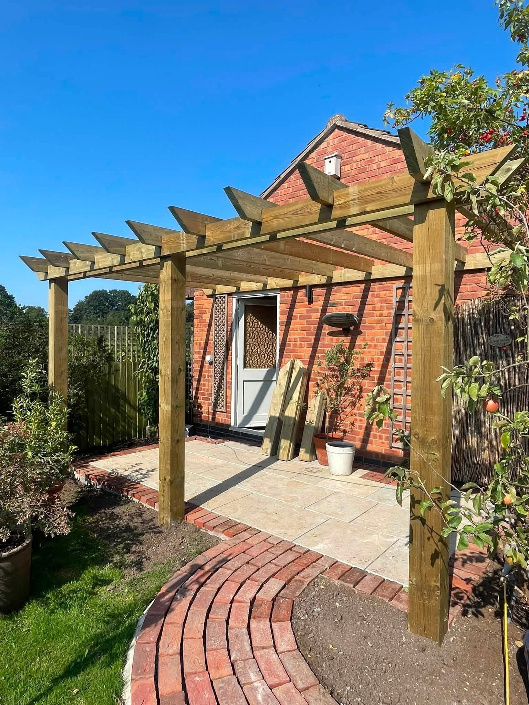
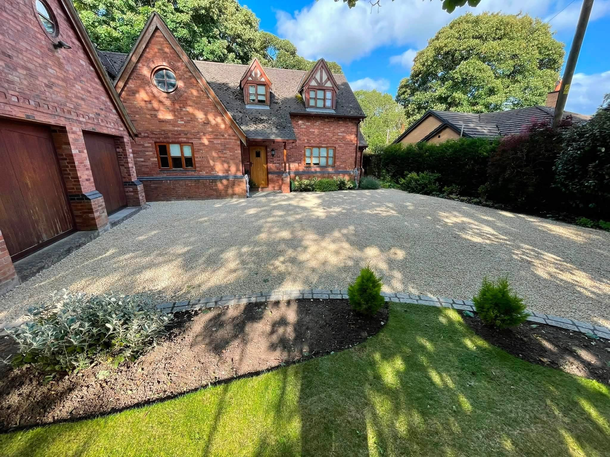
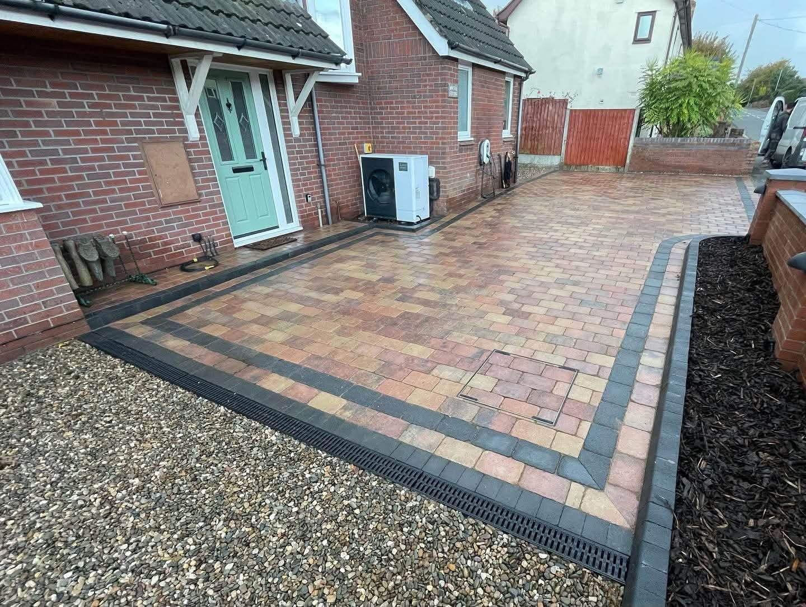
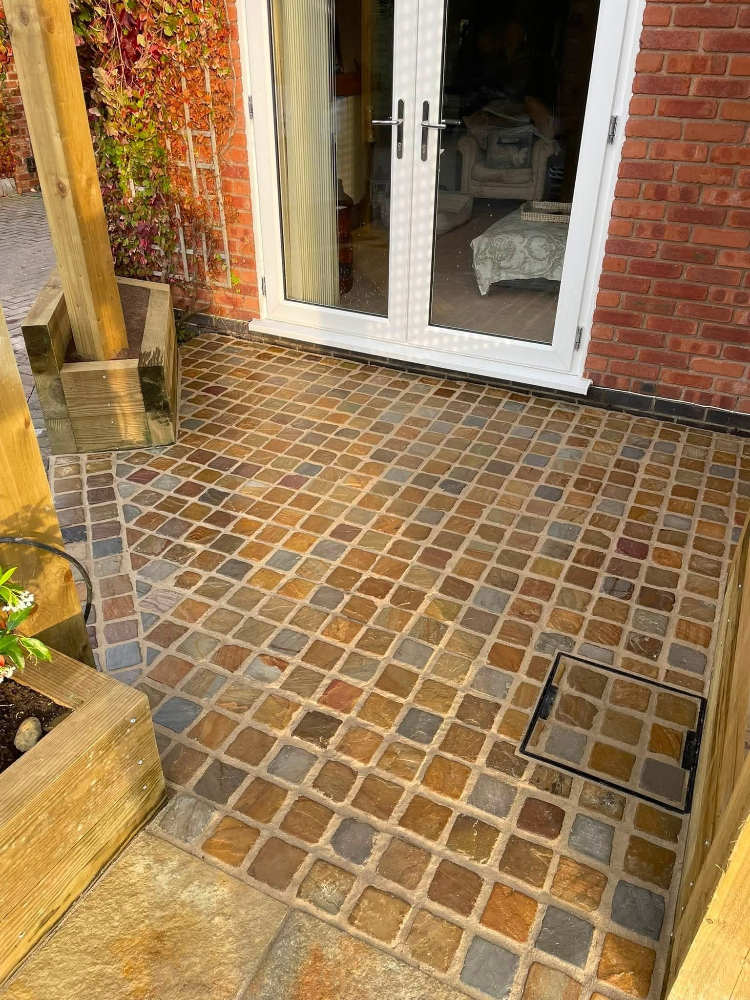
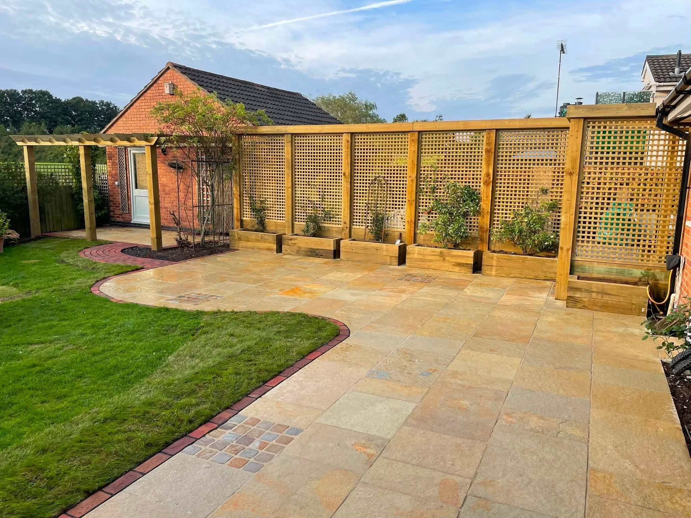
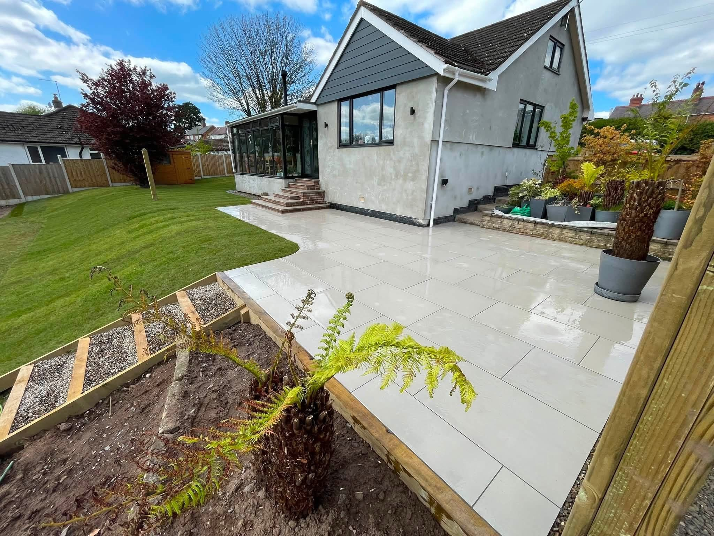
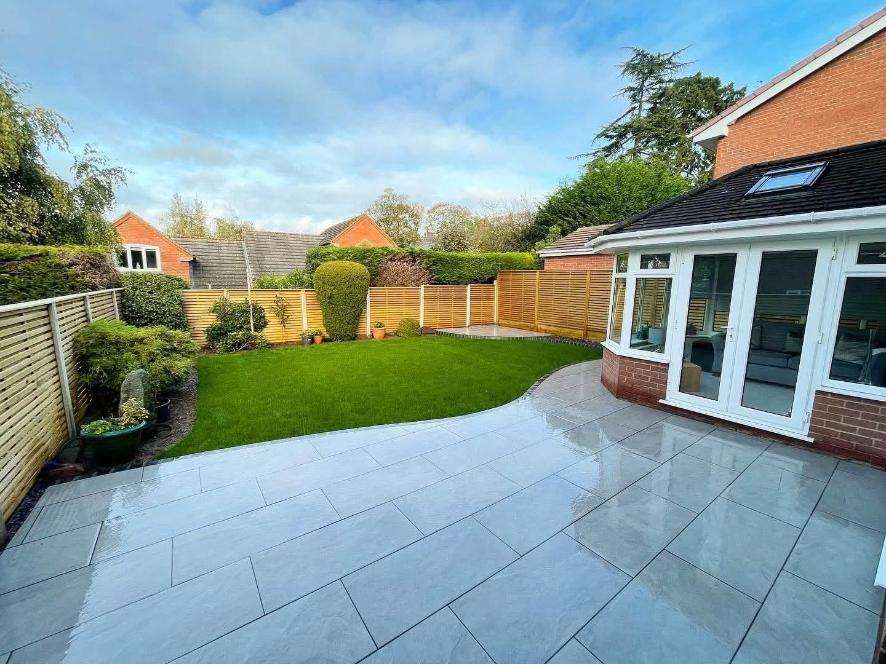

Malpas & Whitchurch · Pergolas & Garden Structures near Whitchurch
Pergolas & Garden Structures near Whitchurch
Timber pergolas and garden features from FAC Landscapes near Malpas and Whitchurch. Explore structures over patios and beside garden boundaries.
Pergolas & Garden Structures near Whitchurch
Pergolas & Garden Structures near Whitchurch
A timber feature can frame a patio, define a garden boundary or give a seating area a stronger sense of place. FAC Landscapes’ projects include a pergola attached to a brick house and timber structures beside paved areas and lawns.
Give the feature a clear purpose
Tell FAC whether you want to frame a seating area, connect a structure to the house or define a separate garden space. Include photos of the proposed position, nearby boundaries and the surfaces underneath.
Consider the paving and planting around it
The photographs show timber posts meeting small stone setts and a pergola alongside a curved patio and lawn. Mention the surrounding landscaping in your enquiry so the structure can be discussed as part of the whole space.
Request a quote →

Driveways & block paving & Patios & paving
The details make the difference.
Contrasting paving borders, sweeping lawn edges and timber features. Discover the connections that bring an outdoor space together.
Discuss your project →
RECENT WORK
Pergolas & Garden Structures near Whitchurch in pictures.
Timber pergolas and garden features from FAC Landscapes near Malpas and Whitchurch. Explore structures over patios and beside garden boundaries.



Malpas & Whitchurch
Family-run. Close to home.
FAC Landscapes is a small family-run company based near Malpas and Whitchurch. Speak directly about your plans, share photographs and discuss the outdoor space you want to create.
A small landscaping company based near Malpas and Whitchurch.
Driveways, patios, gardens and timber features in our project gallery.
Call or share your project details through WhatsApp.
GOOD TO KNOW
Your questions answered.
Can I enquire about a timber pergola?
Yes. Timber pergolas appear in the project photographs. Share your ideas and the position you have in mind.
Can the enquiry include paving too?
Yes. Describe any patio, path or surrounding landscaping you would like to discuss alongside the timber feature.
What information will help?
Send your postcode, photos, the purpose of the structure and any approximate dimensions or inspiration you have.
REQUEST A QUOTE
Tell us what you have in mind.
Send the details of your project and its location. WhatsApp opens with your enquiry ready to send, where you can also attach photos.
FAC Landscapes
Ready to discuss your project?
Malpas & Whitchurch